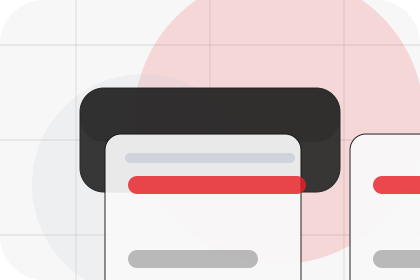
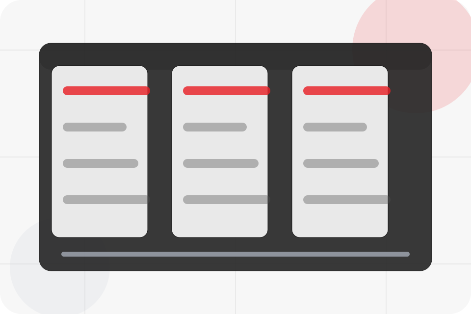
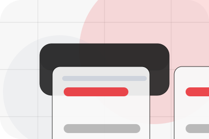
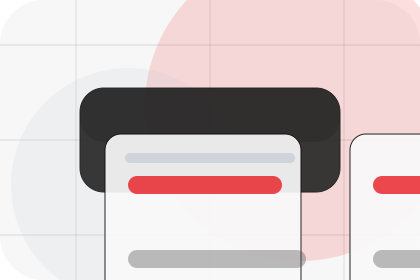
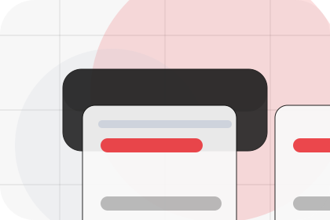
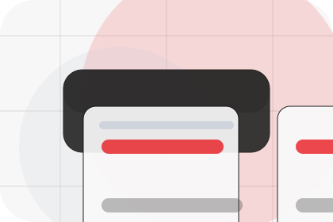
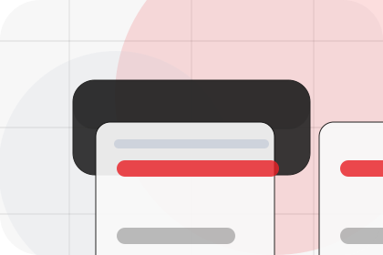
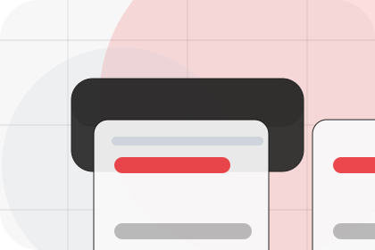
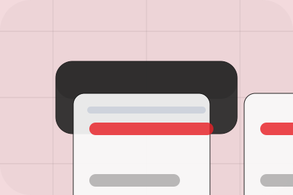

Context
Installations gives the page a specific angle instead of repeating the navigation label.
Projects / 01
Projects opens as a clear energy decision hub: what Vault offers, who it helps, why it matters, and which route to take first.
The first screen combines positioning, proof, primary action, and fast internal navigation, so people can act immediately or compare the rest of the projects route with context.
Centered product hero
Select the closest route and Vault keeps the next step, proof, and follow-up expectation aligned with cost reduction and resilience.

Projects / 02
Installations adds technical context to the projects route, using the minimal energy product landing structure to support cost reduction and resilience before visitors choose a next step.
Vault uses product output cards and focused copy to make the decision easier to scan, aligning the section with cost reduction and resilience rather than filling space.
Explore Projects
Installations gives the page a specific angle instead of repeating the navigation label.

The product output cards show what to compare, what to avoid, and what matters most for energy, power & renewable solutions visitors.

The final cue points to a useful internal route so the section keeps the journey moving.
Projects / 03
Residential adds technical context to the projects route, using the minimal energy product landing structure to support cost reduction and resilience before visitors choose a next step.
Vault uses product output cards and focused copy to make the decision easier to scan, aligning the section with cost reduction and resilience rather than filling space.
Explore ProjectsResidential gives the page a specific angle instead of repeating the navigation label.
The product output cards show what to compare, what to avoid, and what matters most for energy, power & renewable solutions visitors.
The final cue points to a useful internal route so the section keeps the journey moving.
Projects / 04
Commercial adds technical context to the projects route, using the minimal energy product landing structure to support cost reduction and resilience before visitors choose a next step.
Vault uses product output cards and focused copy to make the decision easier to scan, aligning the section with cost reduction and resilience rather than filling space.
Explore ProjectsCommercial gives the page a specific angle instead of repeating the navigation label.
The product output cards show what to compare, what to avoid, and what matters most for energy, power & renewable solutions visitors.
The final cue points to a useful internal route so the section keeps the journey moving.
Projects / 05
Industrial adds technical context to the projects route, using the minimal energy product landing structure to support cost reduction and resilience before visitors choose a next step.
Vault uses product output cards and focused copy to make the decision easier to scan, aligning the section with cost reduction and resilience rather than filling space.
Explore ProjectsVault structures industrial around context, judgment, and a clear next route so visitors can compare the block quickly before they calculate savings.
Calculate SavingsProjects / 06
Output adds technical context to the projects route, using the minimal energy product landing structure to support cost reduction and resilience before visitors choose a next step.
Vault uses product output cards and focused copy to make the decision easier to scan, aligning the section with cost reduction and resilience rather than filling space.
Explore Projects

Output gives the page a specific angle instead of repeating the navigation label.
Projects / 07
Before adds technical context to the projects route, using the minimal energy product landing structure to support cost reduction and resilience before visitors choose a next step.
Vault uses product output cards and focused copy to make the decision easier to scan, aligning the section with cost reduction and resilience rather than filling space.
Explore ProjectsBefore gives the page a specific angle instead of repeating the navigation label.

The product output cards show what to compare, what to avoid, and what matters most for energy, power & renewable solutions visitors.

The final cue points to a useful internal route so the section keeps the journey moving.
Projects / 08
Metrics shows what changes after the work: clearer decisions, visible progress, and proof points that connect the offer to real outcomes.
The layout connects before-and-after thinking with measured outcomes, making the result easy to scan without promising what the business cannot guarantee.
Explore ProjectsThe uncertainty, delay, or missed opportunity visitors bring into metrics.
The clearer, safer, or more valuable state Vault is designed to support.
The visible cue that connects metrics to a believable decision, not a loose claim.
Projects / 09
Reviews converts customer proof into a useful buying signal: the problem, the experience, and what changed afterward.
Proof stays believable by focusing on situation, service experience, and practical change rather than vague praise or unsupported results.
Explore ProjectsWhat the visitor needed before choosing Vault, written with enough context to feel real.
How the service, product, or support felt during the process, not just that it was good.
What became easier to decide, complete, buy, book, or trust after the interaction.
Projects / 10
Vault closes the projects route with a clear action, a quick reminder of the value, and a low-friction way to calculate savings.
Visitors who are ready can use the primary action. Visitors who are still comparing can scan the section links, proof, and support routes before they calculate savings.
Calculate SavingsThe final block keeps the choice simple: act now, compare one more proof route, or send enough detail for a focused response.
Calculate Savingscost reduction and resilience
A renewable energy product site with minimalist hero, savings modules, battery/solar cards, and direct calculator. Projects ends with a direct path to calculate savings, plus enough context for visitors who still need to compare.

Calculate SavingsInformation is provided for planning and should be reviewed for the final client, location, and operating rules.